Office → Markdown / Actual examples
実際の変換例
複数シートのExcel、変更履歴を含むWord、グループ図形を含むPowerPointを、実際のAPIとPlaygroundで変換しました。入力・変換結果・警告をまとめて確認できます。
すべてこのリポジトリで作成したオリジナル資料です。掲載画像は実行後のPlaygroundを撮影したもので、変換結果の文章や図を補正していません。出力ZIPには document.md・report.json・images/ が入っています。
Excel：13シートの包括例
文章、6個の表、数式キャッシュ、図形・画像、非表示・未対応要素を一度に確認。
Word：2種類の表と脚注
変更履歴、3列表、2件の脚注、2つの図形、画像を実変換。
PowerPoint：6スライドの表と図
2種類の表、レビュー経路、接続線、埋め込み画像を抽出。
Excelの見出し行とセル結合の扱いを詳しく比較する場合は、Excel結合・見出しの実例をご覧ください。入力ブックの各ケースと実変換したMarkdown・reportを並べています。RAG向け業務フローのデモ：Word · PowerPoint。入力・実変換Markdown・JSON・スクリーンショットを掲載しています。
このページは同期HTTPの実行例です。非同期HTTP・直接Queueも同じ変換コアを使いますが、ここでQueue経由の動作やAzure上の性能を測定したものではありません。PowerPointは図中の文字・保存された接続関係・スライド上の大まかな位置を本文にし、位置と未接続の矢印が向く方向をJSONにも残します。見た目はスライド全体の参考画像で確認できます。Word・Excelも図形の文字と保存済み接続を本文に残します。Wordは描画グループ・キャンバス、Excelは明示グループまたは解決した接続を確認用画像にまとめます。
Excel：文章・表・図形・未対応要素を含む13シート
13シートから、出力内容のある8シートを残します。非表示2シートと空・取消線のみ・罫線のみの3シートは除外されます。6個の罫線表、部分太字・リンク・取消線、結合セル、保存済みの数式結果、名前付き範囲、画像の重複、入れ子グループ・回転・接続線・未対応グラフを同じファイルに含めています。通常の罫線表では、先頭行に直接塗りつぶしのセルが1つでもあればヘッダーとし、2行目以降は表の表示対象セル（縦結合の続きは除く）がすべて直接塗りつぶされている間だけヘッダーに追加します。直後の行でも左端だけ色付きなら明細として残し、見出し判定は再開しません。先頭行に直接塗りがなければ元の行を明細として残します。左上角だけ罫線がないマトリックスは構造から見出しを判定する例外で、下の24ケースに実出力を示します。採用した元行は report.json の headerSourceRows で確認できます。全行の表示対象セルが直接塗りなら全行が見出しに入り、明細はなくなります。この例の「04_画像」にも該当する表があります。全表示行で同じ明示的な横結合が続く列範囲は1列に畳み、元の列範囲を sourceColumnSpans に記録します。

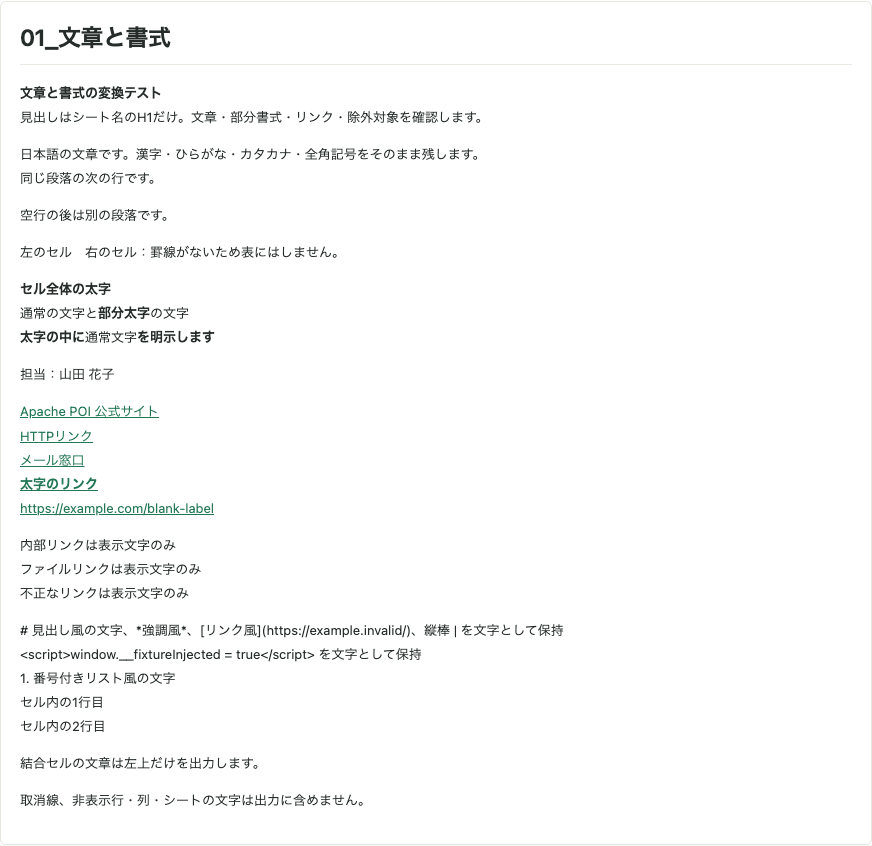

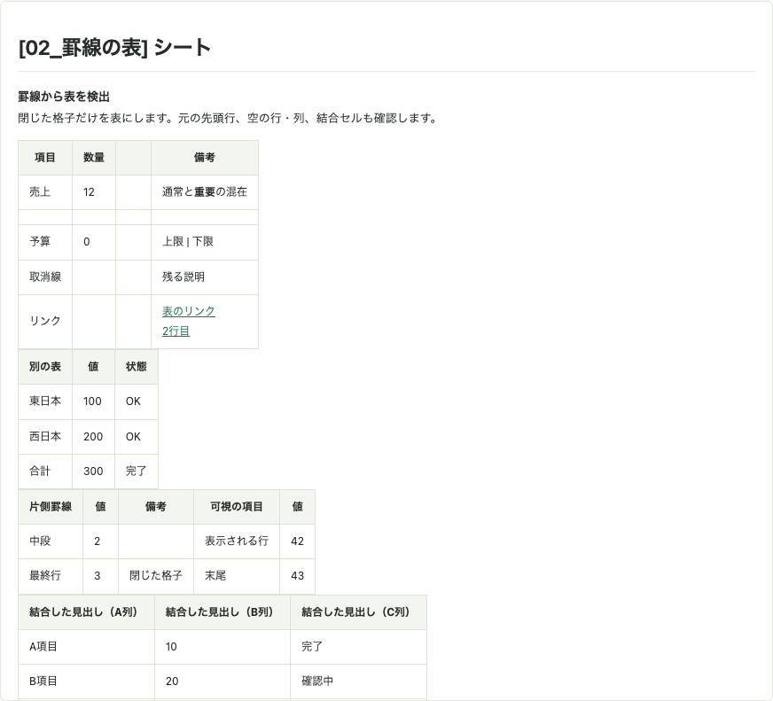
InventoryGrid は表と一致する名前付き範囲から出力した名前です。先頭行から、続く行の表示対象セルがすべて直接色付きの間は見出しを列ごとに連結し、部分的に色付きの行や色のない先頭行は明細に残します。全行で結合幅が揃わない範囲は元の列数を保ちます。シート全体。画像をクリックすると原寸で表示します。

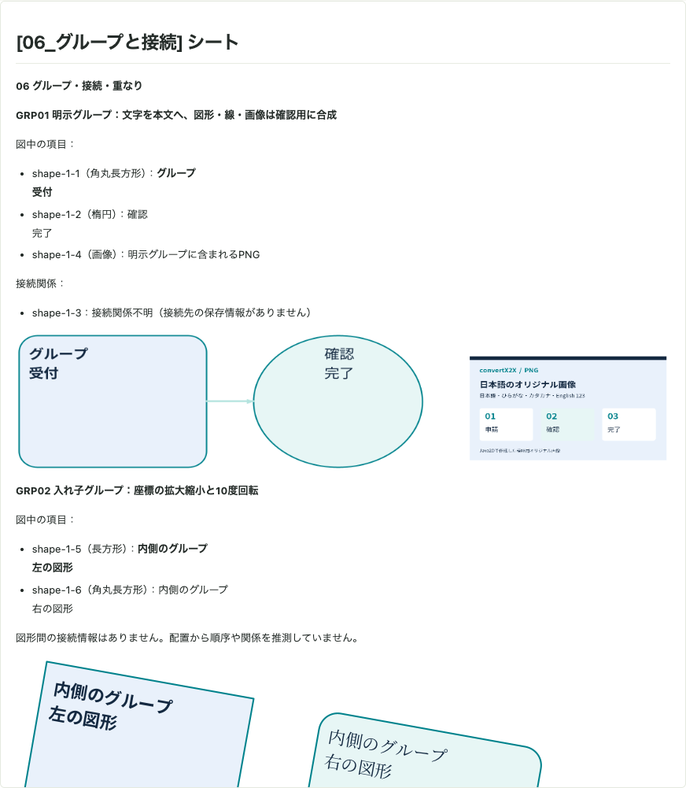


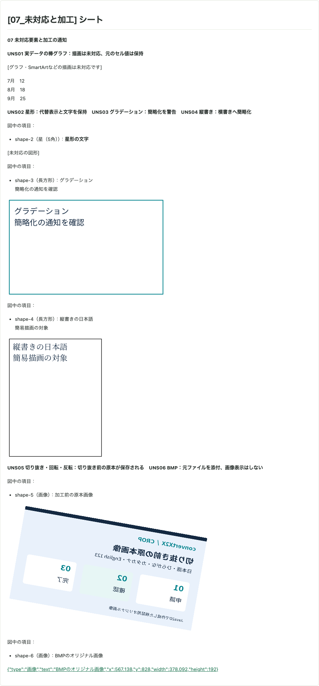
数式は再計算しません。1+2 に意図的に保存したキャッシュ 999 は、出力も 999 です。IMAGE 関数の画像は取得せず未対応表示になります。33アセットには確認用PNGとBMP添付を含みます。PNG/JPEGの回転・反転は確認用画像に反映し、同じ描画結果の画像ファイルは共有します。画像の切り抜きは未対応です。
実際のMarkdown抜粋：表と名前付き範囲
**InventoryGrid**
| **項目** | **数量** | | **備考** |
| --- | --- | --- | --- |
| 売上 | 12 | | 通常と**重要**の混在 |
| | | | |
| 予算 | 0 | | 上限 \| 下限 |
| 取消線 | | | 残る説明 |
| リンク | | | [表のリンク<br>2行目](https://example.com/table) |
| **別の表** | **値** | **状態** |
| --- | --- | --- |
| 東日本 | 100 | OK |
| 西日本 | 200 | OK |
| 合計 | 300 | 完了 |
| **片側罫線** | **値** | **備考** | **可視の項目** | **値** |
| --- | --- | --- | --- | --- |
| 中段 | 2 | | 表示される行 | 42 |
| 最終行 | 3 | 閉じた格子 | 末尾 | 43 |
| **結合した見出し**（A列） | **結合した見出し**（B列） | **結合した見出し**（C列） |
| --- | --- | --- |
| A項目 | 10 | 完了 |
| B項目 | 20 | 確認中 |
| C項目 | 30 | 完了 |
| **商品名** | **個数** | **単位** | スタイルだけの表 | 値 | 備考 |
| --- | --- | --- | --- | --- | --- |
| りんご | 3 | 個 | データA | 10 | 直接罫線なし |
| みかん | 5 | 個 | データB | 20 | 文章として出力 |
| バナナ | 2 | 本 | データC | 30 | |
**単一セルの囲みは文章** **閉じていない罫線** **値** **備考**
途中の行 10 文章として保持
最終の行 20 右下の外周が欠ける
下線だけでは表にしません
条件付き書式の見た目は再評価せず、通常の保存値と直接書式を使います。
100実際のMarkdown抜粋：数式キャッシュと外部画像
保存キャッシュ999（数式は1\+2） 999
数式の通貨表示 ¥12,345
キャッシュなしの数式 =1\+2
リンク先と表示が文字列リテラル [数式の公式リンク](https://poi.apache.org/spreadsheet/)
リンク先は固定、表示は保存値 [保存されたリンク表示](https://example.com/cached)
リンク先が動的ならリンク化しない 動的なリンク表示
IMAGE関数は取得しない \[セル内画像: 未対応\]
取消線がある数値も除外実際のreport.json：未対応・近似・不明な接続の警告
[
{
"code": "LINK_UNSUPPORTED",
"section": "01_文章と書式",
"range": "A26",
"message": "Web・メール以外または不正なリンクを表示文字だけで保持しました。"
},
{
"code": "LINK_UNSUPPORTED",
"section": "01_文章と書式",
"range": "A27",
"message": "Web・メール以外または不正なリンクを表示文字だけで保持しました。"
},
{
"code": "LINK_UNSUPPORTED",
"section": "01_文章と書式",
"range": "A28",
"message": "Web・メール以外または不正なリンクを表示文字だけで保持しました。"
},
{
"code": "CONDITIONAL_FORMATTING_UNEVALUATED",
"section": "02_罫線の表",
"message": "条件付き書式の罫線・太字・取消線は評価していません。"
},
{
"code": "BORDER_NOT_TABLE",
"section": "02_罫線の表",
"range": "A3:I42",
"message": "罫線だけでは表として確定できない部分があります。検出した表の左右の値は表に取り込み、それ以外は本文として保持します。"
},
{
"code": "TABLE_MERGE_FLATTENED",
"section": "02_罫線の表",
"range": "A20:C23",
"message": "Markdown表はセル結合を直接表せないため、共有見出しは各列へ継承し、それ以外の結合の続きは空欄です。"
},
{
"code": "FORMULA_CACHE_MISSING",
"section": "03_表示値と数式",
"range": "C20",
"message": "数式の保存済み計算結果がありません。再計算せず、数式または確定できるリンク表示を残しました。"
},
{
"code": "FORMULA_CACHE_MISSING",
"section": "03_表示値と数式",
"range": "C22",
"message": "数式の保存済み計算結果がありません。再計算せず、数式または確定できるリンク表示を残しました。"
},
{
"code": "DYNAMIC_HYPERLINK_UNSUPPORTED",
"section": "03_表示値と数式",
"range": "C24",
"message": "数式のリンク先を定数として読み取れないため、リンク化していません。"
},
{
"code": "CELL_IMAGE_UNSUPPORTED",
"section": "03_表示値と数式",
"range": "C26",
"message": "IMAGE関数の画像は取得しません。"
},
{
"code": "FORMULA_CACHE_MISSING",
"section": "03_表示値と数式",
"range": "C26",
"message": "数式の保存済み計算結果がありません。再計算せず、数式または確定できるリンク表示を残しました。"
},
{
"code": "DIAGRAM_CONNECTION_UNRESOLVED",
"section": "05_基本図形",
"range": "A25:E25",
"message": "図形の接続関係を確定できません。接続先の保存情報がありません。保存情報と線端の境界接触のどちらでも確定できません。図形ID: shape-8"
},
{
"code": "DIAGRAM_CONNECTION_UNRESOLVED",
"section": "05_基本図形",
"range": "G25:K25",
"message": "図形の接続関係を確定できません。接続先の保存情報がありません。保存情報と線端の境界接触のどちらでも確定できません。図形ID: shape-1-9"
},
{
"code": "DIAGRAM_CONNECTION_UNRESOLVED",
"section": "06_グループと接続",
"range": "A5:M11",
"message": "図形の接続関係を確定できません。接続先の保存情報がありません。保存情報と線端の境界接触のどちらでも確定できません。図形ID: shape-1-3"
},
{
"code": "GRAPHIC_FRAME_UNSUPPORTED",
"section": "07_未対応と加工",
"range": "E4:Q15",
"message": "グラフ・SmartArtなどの描画は未対応です。"
},
{
"code": "SHAPE_UNSUPPORTED",
"section": "07_未対応と加工",
"range": "A20:E28",
"message": "この種類の図形は未対応です。取得できた取消線除去後の文字を残します。"
},
{
"code": "DRAWING_EFFECTS_SIMPLIFIED",
"section": "07_未対応と加工",
"range": "G20:L28",
"message": "複雑な塗り・効果・自由形状は簡略化または代替表示します。"
},
{
"code": "DRAWING_TEXT_APPROXIMATED",
"section": "07_未対応と加工",
"range": "N20:Q30",
"message": "縦書き・縦方向の文字組みは横書きに近似します。"
},
{
"code": "IMAGE_EFFECTS_IGNORED",
"section": "07_未対応と加工",
"range": "A33:G44",
"message": "切り抜き・画像効果は反映しません。プレビューには回転・反転を反映します。"
},
{
"code": "IMAGE_FORMAT_ATTACHMENT",
"section": "07_未対応と加工",
"range": "J35:P43",
"message": "この画像形式は元ファイルの添付として保持します。"
}
]
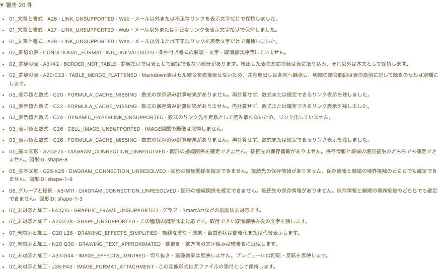
Playground全体 · Markdownタブの画面。入力には明示グループ、保存済み接続ID、保存IDのない横・斜めコネクターの線端接触、重なりだけでは統合しない例を収録しています。


接続線は6件あり、保存された接続先から1件、線端と図形境界の接触から2件を確定しました。線端接触の2本は「申請 → 確認 → 保管」を連鎖させ、1つの確認用画像にまとめます。ほかの3件は接続先を確定できないため不明のままです。図形の文字は通常の本文に、図形ID・位置・接続はJSONに残ります。セルの文章・表はMarkdownのままで、図の画像には含めません。
実際のMarkdown抜粋：グループ・接続・座標JSON
# [06\_グループと接続] シート
**06 グループ・接続・重なり**
**GRP01 明示グループ：文字を本文へ、図形・線・画像は確認用に合成**
図中の項目：
- shape-1-1（角丸長方形）：**グループ**<br>**受付**
- shape-1-2（楕円）：確認<br>完了
- shape-1-4（画像）：明示グループに含まれるPNG
接続関係：
- shape-1-3：接続関係不明（接続先の保存情報がありません）

**GRP02 入れ子グループ：座標の拡大縮小と10度回転**
図中の項目：
- shape-1-5（長方形）：**内側のグループ**<br>**左の図形**
- shape-1-6（角丸長方形）：内側のグループ<br>右の図形
図形間の接続情報はありません。配置から順序や関係を推測していません。

**GRP03 未グループ：コネクターの接続先IDで1枚にまとめる**
図中の項目：
- shape-3（角丸長方形）：**受付**
- shape-4（角丸長方形）：**完了**
接続関係：
- shape-1-9：shape-3「受付」 → shape-4「完了」

**GRP04 未グループ：重なった図形も個別に出力**
図中の項目：
- shape-6（長方形）：背面の四角

図中の項目：
- shape-7（楕円）：**前面の楕円**

**GRP05 背景図形＋PNG：図形と画像を別々に出力**

図中の項目：
- shape-9（画像）：背景図形に重なるPNG
Excel：24シートで見出し・結合・罫線を比較
入力の直接塗り、横・縦結合、先頭だけ罫線のない表、多段見出しを変えた24シートを、現行の変換APIに送った結果です。代表10ケースを入力の画面表示と実際のMarkdownで並べました。残りも24ケースの比較ページで確認できます。
通常の罫線表は、先頭行に直接塗りがあればヘッダーにし、続く行は表示対象セルがすべて直接塗りの間だけ追加します。部分的に色付きの行は明細に残します。左上だけ罫線がないマトリックスでは、保存された行列の罫線構造から見出しを判定する matrix-grid もあります。無罫線の注記は表の前に文章として出し、元のセルや結合範囲にない見出しは補いません。図は入力セルのブラウザー表示を撮影したもので、右の文章は実際の document.md から一字も変更せずに掲載しています。
C02：色付き2行ヘッダー・結合なし
連続する2行の見出しを列ごとに階層化する。

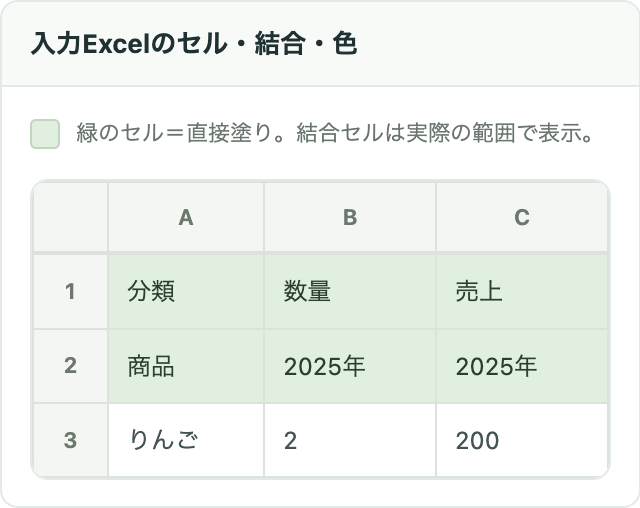
変換後：document.md の C02 シート
# [02\_複行\_色あり\_結合なし] シート
| **分類** / **商品** | **数量** / **2025年** | **売上** / **2025年** |
| --- | --- | --- |
| りんご | 2 | 200 |C08：1行ヘッダーだけ横結合
A1:B1の共有見出しを分かれた明細列へ引き継ぐ。

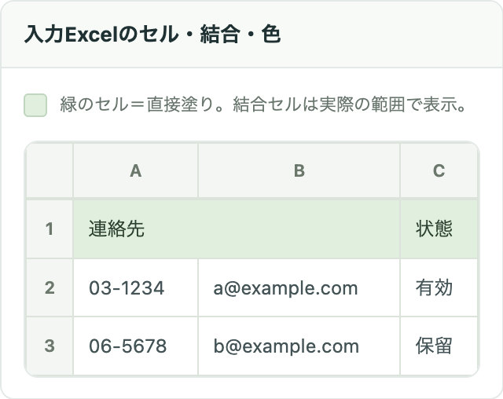
変換後：document.md の C08 シート
# [08\_単行\_上だけ横結合] シート
| **連絡先**（A列） | **連絡先**（B列） | **状態** |
| --- | --- | --- |
| 03\-1234 | a@example.com | 有効 |
| 06\-5678 | b@example.com | 保留 |C11：2行ヘッダー・縦結合と横結合
A1:A2の縦結合とB1:C1の横結合を同じ見出し内で扱う。

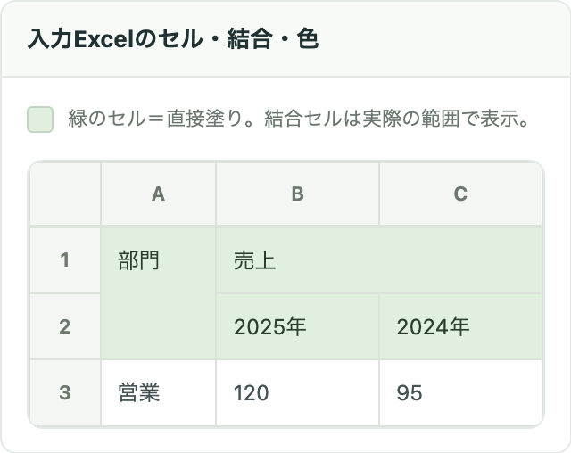
変換後：document.md の C11 シート
# [11\_複行\_縦横結合] シート
| **部門** | **売上** / **2025年** | **売上** / **2024年** |
| --- | --- | --- |
| 営業 | 120 | 95 |C12：全行で同じ幅の横結合・1行ヘッダー
A:Bを毎行同じ幅で結合し、論理的な1列として扱う。

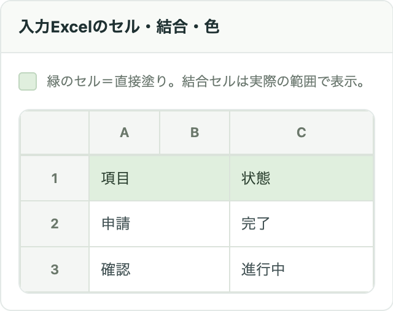
変換後：document.md の C12 シート
# [12\_全行同幅\_単行見出し] シート
| **項目** | **状態** |
| --- | --- |
| 申請 | 完了 |
| 確認 | 進行中 |C14：明細の一部だけ横結合
先頭ヘッダーは独立列。2行目のA:Bだけ結合しても列数を維持する。

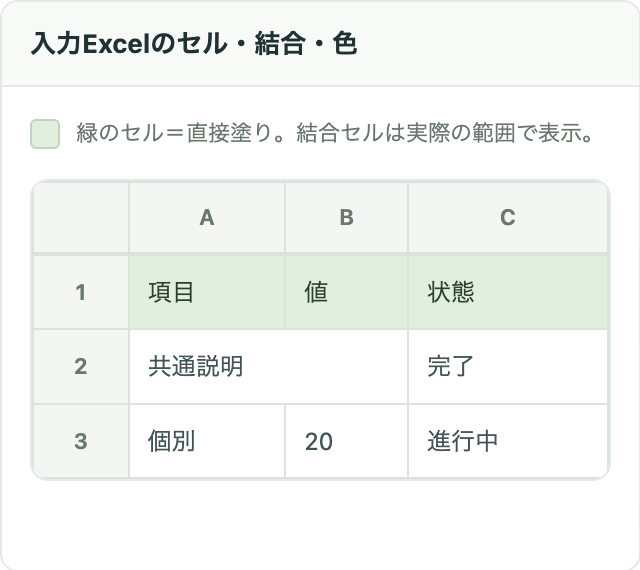
変換後：document.md の C14 シート
# [14\_明細だけ横結合] シート
結合セル A2:B2「共通説明」は明細行の複数列に共通です。
| **項目** | **値** | **状態** |
| --- | --- | --- |
| 共通説明 | | 完了 |
| 個別 | 20 | 進行中 |C15：明細の縦結合
A2:A3の値は2行分にまたがる。後続行の扱いを変換結果で確認する。

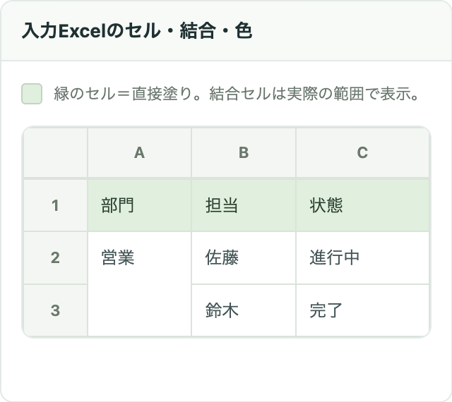
変換後：document.md の C15 シート
# [15\_明細だけ縦結合] シート
結合セル A2:A3「営業」は複数の明細行に共通です。
| **部門** | **担当** | **状態** |
| --- | --- | --- |
| 営業 | 佐藤 | 進行中 |
| | 鈴木 | 完了 |C21：左上だけ罫線のないマトリックス
A1は空欄でセル自体に罫線がない。罫線付きの1月・2月を塗りなしでも1段の見出しにする。

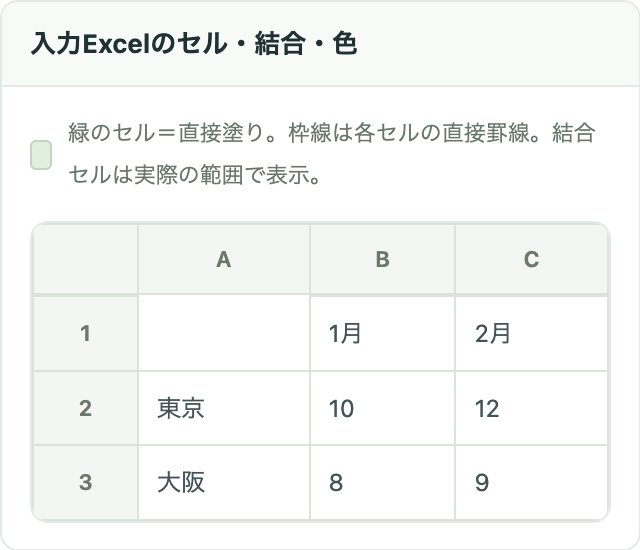
変換後：document.md の C21 シート
# [21\_左上無罫線のマトリックス] シート
| | 1月 | 2月 |
| --- | --- | --- |
| 東京 | 10 | 12 |
| 大阪 | 8 | 9 |C22：通常表に続く、角だけ罫線のないマトリックス
A:Cの通常列とD:Fのマトリックスが横につながる。D1は空欄でセル自体に罫線がなく、全体を1表として扱う。

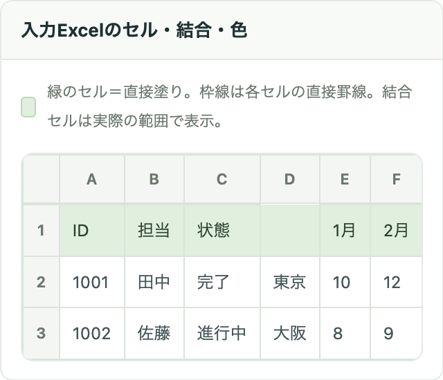
変換後：document.md の C22 シート
# [22\_通常表に続くマトリックス] シート
| **ID** | **担当** | **状態** | | **1月** | **2月** |
| --- | --- | --- | --- | --- | --- |
| 1001 | 田中 | 完了 | 東京 | 10 | 12 |
| 1002 | 佐藤 | 進行中 | 大阪 | 8 | 9 |C23：無罫線の注記と3列幅の結合見出し
A1・B1の文字は無罫線の注記。C1:E1の売上見出しは3列幅の明示結合で、下段の個別見出しと合わせる。

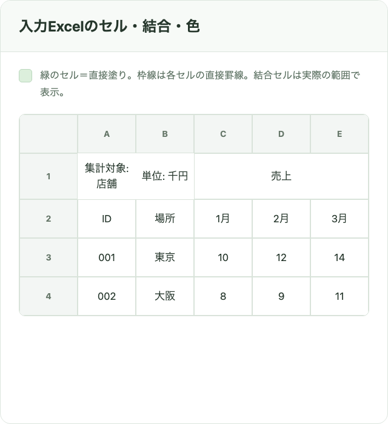
変換後：document.md の C23 シート
# [23\_注記と3列結合の見出し] シート
集計対象: 店舗 単位: 千円
| ID | 場所 | 売上 / 1月 | 売上 / 2月 | 売上 / 3月 |
| --- | --- | --- | --- | --- |
| 001 | 東京 | 10 | 12 | 14 |
| 002 | 大阪 | 8 | 9 | 11 |C24：無罫線の注記と縦横結合を含む3段見出し
A1・B1の文字は無罫線の注記。売上はC1:D1だけの結合で、E1・F1は無罫線。A2:A3・B2:B3の縦結合と、月の横結合で3段を表す。上段結合の幅は固定規則ではなく入力の結合範囲に従う。

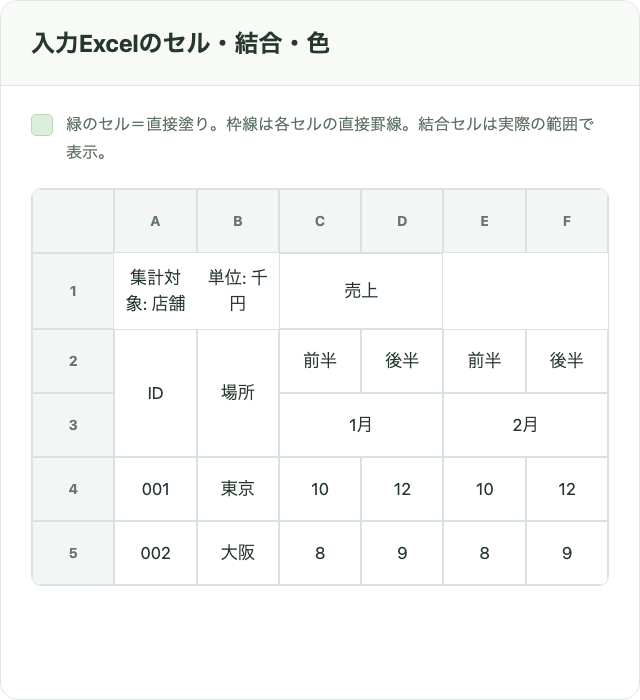
変換後：document.md の C24 シート
# [24\_注記と縦横結合の3段見出し] シート
集計対象: 店舗 単位: 千円
| ID | 場所 | 売上 / 前半 / 1月 | 売上 / 後半 / 1月 | 前半 / 2月 | 後半 / 2月 |
| --- | --- | --- | --- | --- | --- |
| 001 | 東京 | 10 | 12 | 10 | 12 |
| 002 | 大阪 | 8 | 9 | 8 | 9 |Word：2種類の結合表・脚注・図形を実変換
編集可能なDOCXに、罫線なしの結合表と3列の判定表、セル内の複数段落、太字とリンク、変更履歴、3から始まる番号、2件の脚注を収録しています。回転した角丸長方形、楕円、埋め込みPNGも同じ文書に入れ、図中の文字をMarkdown本文へ残します。

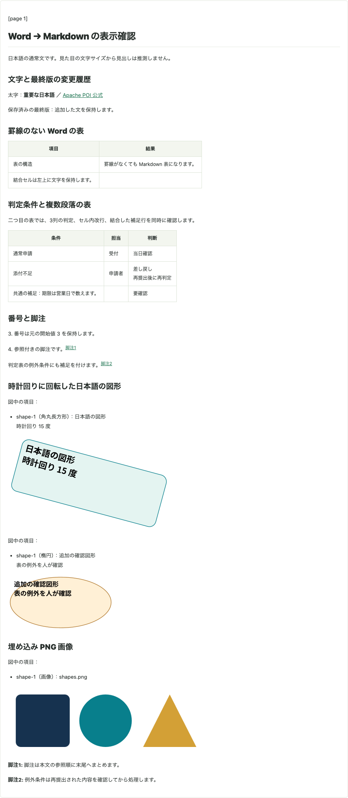
変換後：3列の判定表
## **判定条件と複数段落の表**
二つ目の表では、3列の判定、セル内改行、結合した補足行を同時に確認します。
| 条件 | 担当 | 判断 |
| --- | --- | --- |
| 通常申請 | 受付 | 当日確認 |
| 添付不足 | 申請者 | 差し戻し<br>再提出後に再判定 |
| 共通の補足：期限は営業日で数えます。 | | 要確認 |2つのWord表はMarkdown表として出力され、結合セルは開始セルに値を残します。追加したセル内の2段落は <br> でつながります。図形の文字は通常の本文にあり、参考画像3点で形を確認できます。簡易描画に関する2件の警告は下のJSONと実際のレポートに記録しています。
同じ入力から作ったPDF
同じDOCXを POST /api/convert?filename=word-complex.docx&output=pdf に送った実際のHTTP 200応答です。PDFは変換後の内容を3ページに組んだもので、下の画像はその1ページ目を描画したものです。

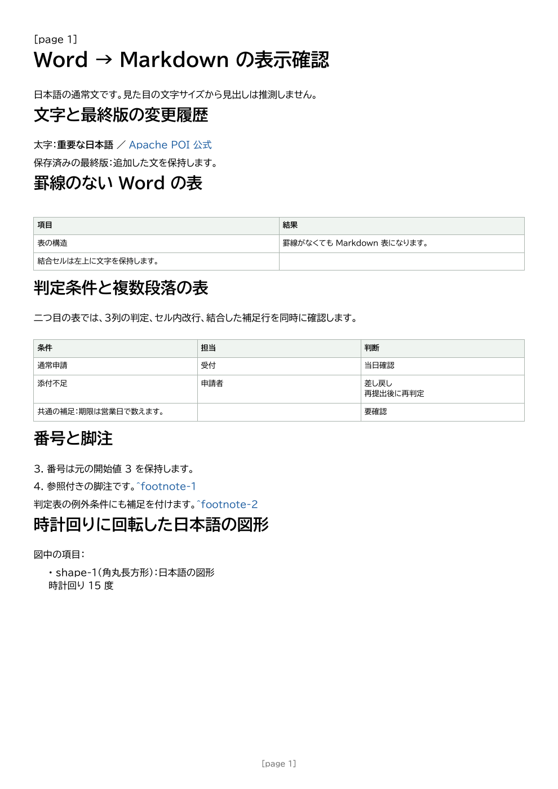
実際のMarkdown全文
[page 1]
# **Word → Markdown の表示確認**
日本語の通常文です。見た目の文字サイズから見出しは推測しません。
## **文字と最終版の変更履歴**
太字：**重要な日本語** ／ [Apache POI 公式](https://poi.apache.org/)
保存済みの最終版：追加した文を保持します。
## **罫線のない Word の表**
| 項目 | 結果 |
| --- | --- |
| 表の構造 | 罫線がなくても Markdown 表になります。 |
| 結合セルは左上に文字を保持します。 | |
## **判定条件と複数段落の表**
二つ目の表では、3列の判定、セル内改行、結合した補足行を同時に確認します。
| 条件 | 担当 | 判断 |
| --- | --- | --- |
| 通常申請 | 受付 | 当日確認 |
| 添付不足 | 申請者 | 差し戻し<br>再提出後に再判定 |
| 共通の補足：期限は営業日で数えます。 | | 要確認 |
## **番号と脚注**
3\. 番号は元の開始値 3 を保持します。
4\. 参照付きの脚注です。[^footnote-1]
判定表の例外条件にも補足を付けます。[^footnote-2]
## **時計回りに回転した日本語の図形**
図中の項目：
- shape-1（角丸長方形）：日本語の図形<br>時計回り 15 度

図中の項目：
- shape-1（楕円）：追加の確認図形<br>表の例外を人が確認

## **埋め込み PNG 画像**
図中の項目：
- shape-1（画像）：shapes.png

[^footnote-1]: 脚注は本文の参照順に末尾へまとめます。
[^footnote-2]: 例外条件は再提出された内容を確認してから処理します。
実際のreport.json：警告
[
{
"code": "DRAWING_TEXT_APPROXIMATED",
"section": "document",
"range": "paragraph:14",
"message": "Word図形内の文字は取消線・非表示を除去して簡易描画します。段落ごとの書式・余白・文字回転は近似です。"
},
{
"code": "DRAWING_TEXT_APPROXIMATED",
"section": "document",
"range": "paragraph:15",
"message": "Word図形内の文字は取消線・非表示を除去して簡易描画します。段落ごとの書式・余白・文字回転は近似です。"
}
]


Word：RAG向けの購入申請フロー
編集可能なDrawingMLグループに、申請・確認・完了・修正再申請を配置しました。図の前後には通常の段落を置き、図形の文字と4件の確定した接続、1件の接続不明を本文の位置関係とともに確認できます。

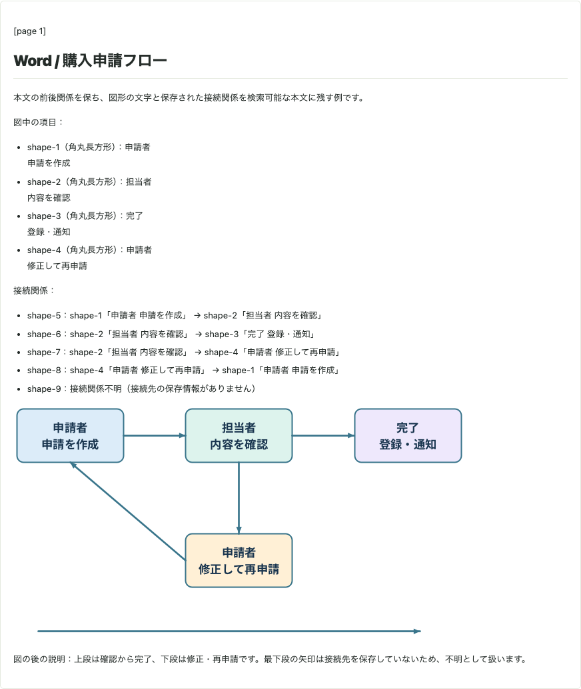
変換後：図形と接続の本文
図中の項目：
- shape-1（角丸長方形）：申請者<br>申請を作成
- shape-2（角丸長方形）：担当者<br>内容を確認
- shape-3（角丸長方形）：完了<br>登録・通知
- shape-4（角丸長方形）：申請者<br>修正して再申請
接続関係：
- shape-5：shape-1「申請者 申請を作成」 → shape-2「担当者 内容を確認」
- shape-6：shape-2「担当者 内容を確認」 → shape-3「完了 登録・通知」
- shape-7：shape-2「担当者 内容を確認」 → shape-4「申請者 修正して再申請」
- shape-8：shape-4「申請者 修正して再申請」 → shape-1「申請者 申請を作成」
- shape-9：接続関係不明（接続先の保存情報がありません）非表示図形と取消線の検証用文字列は、本文・JSON・画像から除外されています。最下段の独立した矢印は接続先の保存情報がなく、近くの図形に推測で接続しません。
実際のMarkdown全文
[page 1]
# **Word / 購入申請フロー**
本文の前後関係を保ち、図形の文字と保存された接続関係を検索可能な本文に残す例です。
図中の項目：
- shape-1（角丸長方形）：申請者<br>申請を作成
- shape-2（角丸長方形）：担当者<br>内容を確認
- shape-3（角丸長方形）：完了<br>登録・通知
- shape-4（角丸長方形）：申請者<br>修正して再申請
接続関係：
- shape-5：shape-1「申請者 申請を作成」 → shape-2「担当者 内容を確認」
- shape-6：shape-2「担当者 内容を確認」 → shape-3「完了 登録・通知」
- shape-7：shape-2「担当者 内容を確認」 → shape-4「申請者 修正して再申請」
- shape-8：shape-4「申請者 修正して再申請」 → shape-1「申請者 申請を作成」
- shape-9：接続関係不明（接続先の保存情報がありません）

図の後の説明：上段は確認から完了、下段は修正・再申請です。最下段の矢印は接続先を保存していないため、不明として扱います。
実際のreport.json：近似・不明な接続の警告
[
{
"code": "DRAWING_TEXT_APPROXIMATED",
"section": "document",
"range": "paragraph:3",
"message": "Word図形内の文字は取消線・非表示を除去して簡易描画します。段落ごとの書式・余白・文字回転は近似です。"
},
{
"code": "DRAWING_TEXT_APPROXIMATED",
"section": "document",
"range": "paragraph:3",
"message": "Word図形内の文字は取消線・非表示を除去して簡易描画します。段落ごとの書式・余白・文字回転は近似です。"
},
{
"code": "DRAWING_TEXT_APPROXIMATED",
"section": "document",
"range": "paragraph:3",
"message": "Word図形内の文字は取消線・非表示を除去して簡易描画します。段落ごとの書式・余白・文字回転は近似です。"
},
{
"code": "DRAWING_TEXT_APPROXIMATED",
"section": "document",
"range": "paragraph:3",
"message": "Word図形内の文字は取消線・非表示を除去して簡易描画します。段落ごとの書式・余白・文字回転は近似です。"
},
{
"code": "DIAGRAM_CONNECTION_UNRESOLVED",
"section": "document",
"range": "paragraph:3/drawing:1",
"message": "図形の接続関係を確定できません。接続先の保存情報がありません。保存情報と線端の境界接触のどちらでも確定できません。図形ID: shape-9"
}
]


PowerPoint：6スライドの表・図形・画像を実変換
6表示＋1非表示スライドの編集可能なPPTXです。本文、番号、リンク、罫線なし結合表に加え、4列の条件別判定表、3つの図形を結ぶレビュー経路、埋め込みPNGを含みます。図形の文字と接続関係をMarkdown本文に、図形・線・位置をreport.jsonに残します。

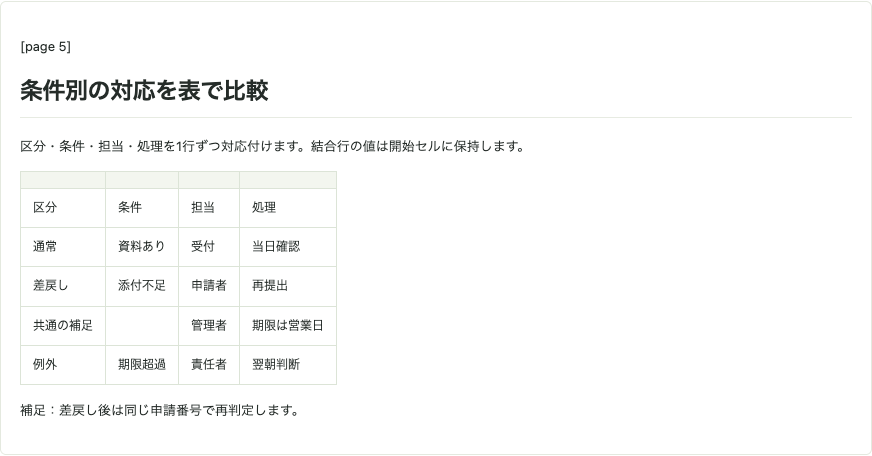
変換後：スライド5の表
[page 5]
# 条件別の対応を表で比較
区分・条件・担当・処理を1行ずつ対応付けます。結合行の値は開始セルに保持します。
| | | | |
| --- | --- | --- | --- |
| 区分 | 条件 | 担当 | 処理 |
| 通常 | 資料あり | 受付 | 当日確認 |
| 差戻し | 添付不足 | 申請者 | 再提出 |
| 共通の補足 | | 管理者 | 期限は営業日 |
| 例外 | 期限超過 | 責任者 | 翌朝判断 |
補足：差戻し後は同じ申請番号で再判定します。
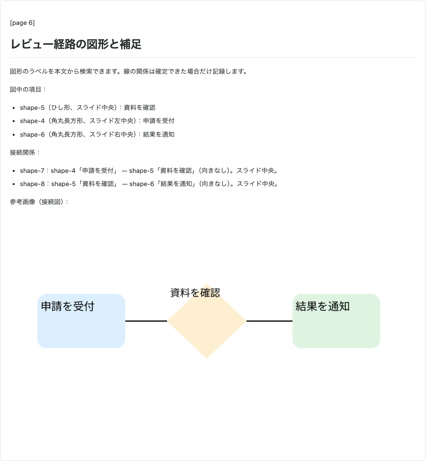
変換後：スライド6の図形
[page 6]
# レビュー経路の図形と補足
図形のラベルを本文から検索できます。線の関係は確定できた場合だけ記録します。
図中の項目：
- shape-5（ひし形、スライド中央）：資料を確認
- shape-4（角丸長方形、スライド左中央）：申請を受付
- shape-6（角丸長方形、スライド右中央）：結果を通知
接続関係：
- shape-7：shape-4「申請を受付」 — shape-5「資料を確認」（向きなし）。スライド中央。
- shape-8：shape-5「資料を確認」 — shape-6「結果を通知」（向きなし）。スライド中央。
参考画像（接続図）：
従来の罫線なし結合表と、接続先IDを持たない線の例も残しています。スライド3の線は接続関係不明、スライド6の2本は変換結果で接続先を確定しています。非表示スライド、図形の取消線、非表示図形の文字は本文へ出しません。

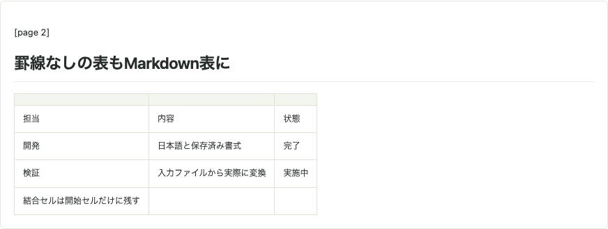

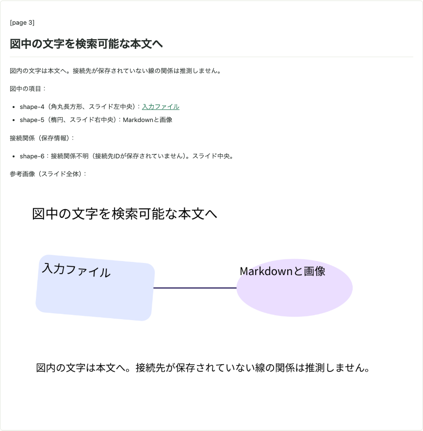
実際のMarkdown全文：6枚の表示スライド
[page 1]
# PowerPointからMarkdownへ
日本語の本文・箇条書き・表・図・画像の実変換サンプルです。
3\. 保存した番号を保つ
4\. 外部コンテンツを取得しない
- 日本語と English ABC123 を保持
[資料へのリンク](https://example.com/reference)
[page 2]
# 罫線なしの表もMarkdown表に
| | | |
| --- | --- | --- |
| 担当 | 内容 | 状態 |
| 開発 | 日本語と保存済み書式 | 完了 |
| 検証 | 入力ファイルから実際に変換 | 実施中 |
| 結合セルは開始セルだけに残す | | |
[page 3]
# 図中の文字を検索可能な本文へ
図内の文字は本文へ。接続先が保存されていない線の関係は推測しません。
図中の項目：
- shape-4（角丸長方形、スライド左中央）：[入力ファイル](https://example.com/input)
- shape-5（楕円、スライド右中央）：Markdownと画像
接続関係：
- shape-6：接続関係不明（接続先IDが保存されていません）。スライド中央。
参考画像（接続図）：

[page 4]
# 保存済みの埋め込み画像
画像は埋め込みデータを参照し、代替説明も残します。
図中の項目：
- shape-3（画像、スライド中央）：紺色背景と紫色の円
参考画像（図形）：

[page 5]
# 条件別の対応を表で比較
区分・条件・担当・処理を1行ずつ対応付けます。結合行の値は開始セルに保持します。
| | | | |
| --- | --- | --- | --- |
| 区分 | 条件 | 担当 | 処理 |
| 通常 | 資料あり | 受付 | 当日確認 |
| 差戻し | 添付不足 | 申請者 | 再提出 |
| 共通の補足 | | 管理者 | 期限は営業日 |
| 例外 | 期限超過 | 責任者 | 翌朝判断 |
補足：差戻し後は同じ申請番号で再判定します。
[page 6]
# レビュー経路の図形と補足
図形のラベルを本文から検索できます。線の関係は確定できた場合だけ記録します。
図中の項目：
- shape-5（ひし形、スライド中央）：資料を確認
- shape-4（角丸長方形、スライド左中央）：申請を受付
- shape-6（角丸長方形、スライド右中央）：結果を通知
接続関係：
- shape-7：shape-4「申請を受付」 — shape-5「資料を確認」（向きなし）。スライド中央。
- shape-8：shape-5「資料を確認」 — shape-6「結果を通知」（向きなし）。スライド中央。
参考画像（接続図）：

実際のreport.json：警告
[
{
"code": "TABLE_MERGE_FLATTENED",
"section": "スライド2",
"range": "shape-3",
"message": "Markdown表では結合の開始セルだけに内容を残します。"
},
{
"code": "DIAGRAM_CONNECTION_UNRESOLVED",
"section": "スライド3",
"range": "shape-6",
"message": "図形の接続関係を確定できません。接続先IDが保存されていません。保存情報と線端の境界接触のどちらでも確定できません。"
},
{
"code": "TABLE_MERGE_FLATTENED",
"section": "スライド5",
"range": "shape-4",
"message": "Markdown表では結合の開始セルだけに内容を残します。"
}
]


PowerPoint：RAG向け業務フローのデモ
購入申請の条件分岐・差戻しループ、グループ内外の接続、双方向と始点の矢印、接続情報がないケースを含む3枚の編集可能な資料です。独立した「承認」「至急」を近くの矢印へ関連付けません。

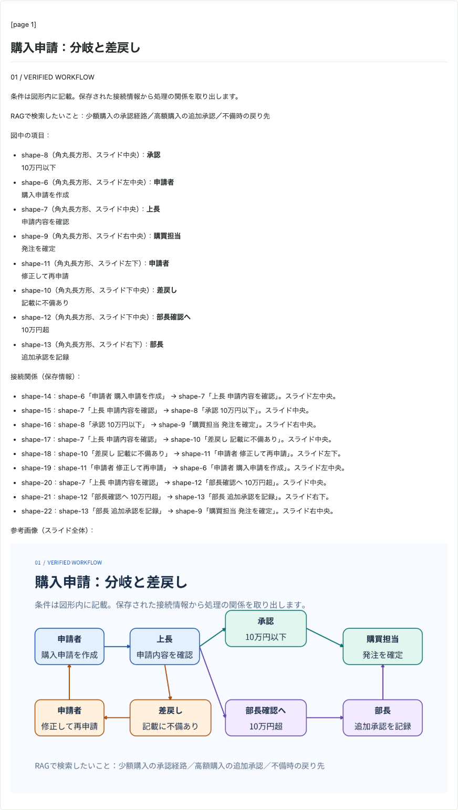

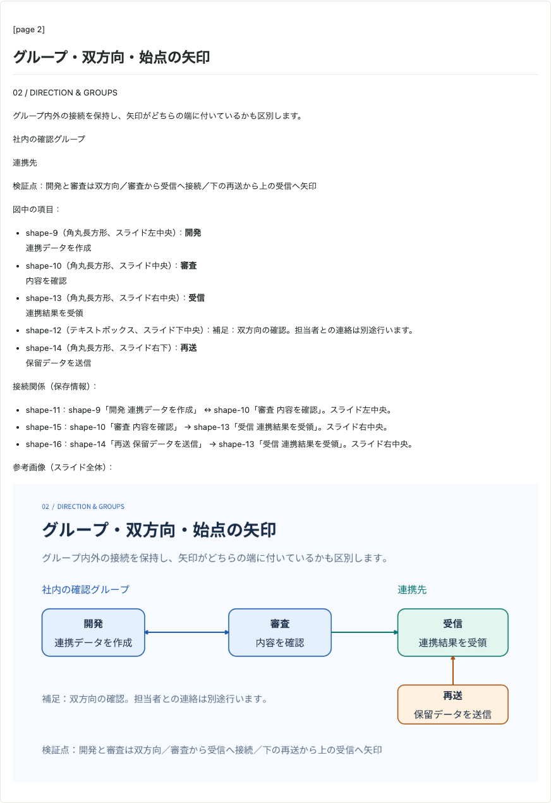

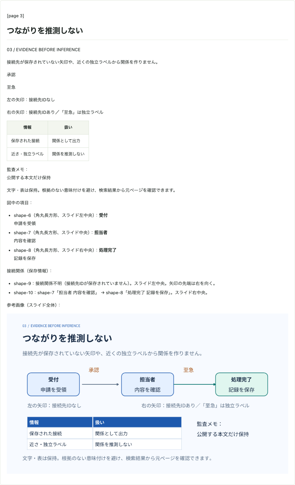
14接続中13件を保存データから解決しました。図形の文字・接続関係・スライド上の位置は本文にあり、画像のaltやOCRを使わず検索対象にできます。3枚目の shape-9 は接続先IDが保存されていませんが、スライド左中央にある線で、矢印の先端が右を向くことは読み取れます。JSONの positionOnSlide と arrowheadPointsToward にも残し、接続相手は推測しません。
実際のMarkdown全文：文字と接続関係、確認用画像
[page 1]
# 購入申請：分岐と差戻し
01 / VERIFIED WORKFLOW
条件は図形内に記載。保存された接続情報から処理の関係を取り出します。
RAGで検索したいこと：少額購入の承認経路／高額購入の追加承認／不備時の戻り先
図中の項目：
- shape-8（角丸長方形、スライド中央）：**承認**<br>10万円以下
- shape-6（角丸長方形、スライド左中央）：**申請者**<br>購入申請を作成
- shape-7（角丸長方形、スライド中央）：**上長**<br>申請内容を確認
- shape-9（角丸長方形、スライド右中央）：**購買担当**<br>発注を確定
- shape-11（角丸長方形、スライド左下）：**申請者**<br>修正して再申請
- shape-10（角丸長方形、スライド下中央）：**差戻し**<br>記載に不備あり
- shape-12（角丸長方形、スライド下中央）：**部長確認へ**<br>10万円超
- shape-13（角丸長方形、スライド右下）：**部長**<br>追加承認を記録
接続関係（保存情報）：
- shape-14：shape-6「申請者 購入申請を作成」 → shape-7「上長 申請内容を確認」。スライド左中央。
- shape-15：shape-7「上長 申請内容を確認」 → shape-8「承認 10万円以下」。スライド中央。
- shape-16：shape-8「承認 10万円以下」 → shape-9「購買担当 発注を確定」。スライド右中央。
- shape-17：shape-7「上長 申請内容を確認」 → shape-10「差戻し 記載に不備あり」。スライド中央。
- shape-18：shape-10「差戻し 記載に不備あり」 → shape-11「申請者 修正して再申請」。スライド左下。
- shape-19：shape-11「申請者 修正して再申請」 → shape-6「申請者 購入申請を作成」。スライド左中央。
- shape-20：shape-7「上長 申請内容を確認」 → shape-12「部長確認へ 10万円超」。スライド中央。
- shape-21：shape-12「部長確認へ 10万円超」 → shape-13「部長 追加承認を記録」。スライド右下。
- shape-22：shape-13「部長 追加承認を記録」 → shape-9「購買担当 発注を確定」。スライド右中央。
参考画像（スライド全体）：

[page 2]
# グループ・双方向・始点の矢印
02 / DIRECTION & GROUPS
グループ内外の接続を保持し、矢印がどちらの端に付いているかも区別します。
社内の確認グループ
連携先
検証点：開発と審査は双方向／審査から受信へ接続／下の再送から上の受信へ矢印
図中の項目：
- shape-9（角丸長方形、スライド左中央）：**開発**<br>連携データを作成
- shape-10（角丸長方形、スライド中央）：**審査**<br>内容を確認
- shape-13（角丸長方形、スライド右中央）：**受信**<br>連携結果を受領
- shape-12（テキストボックス、スライド下中央）：補足：双方向の確認。担当者との連絡は別途行います。
- shape-14（角丸長方形、スライド右下）：**再送**<br>保留データを送信
接続関係（保存情報）：
- shape-11：shape-9「開発 連携データを作成」 ↔ shape-10「審査 内容を確認」。スライド左中央。
- shape-15：shape-10「審査 内容を確認」 → shape-13「受信 連携結果を受領」。スライド右中央。
- shape-16：shape-14「再送 保留データを送信」 → shape-13「受信 連携結果を受領」。スライド右中央。
参考画像（スライド全体）：

[page 3]
# つながりを推測しない
03 / EVIDENCE BEFORE INFERENCE
接続先が保存されていない矢印や、近くの独立ラベルから関係を作りません。
承認
至急
左の矢印：接続先IDなし
右の矢印：接続先IDあり／「至急」は独立ラベル
| **情報** | **扱い** |
| --- | --- |
| 保存された接続 | 関係として出力 |
| 近さ・独立ラベル | 関係を推測しない |
監査メモ：
公開する本文だけ保持
文字・表は保持。根拠のない意味付けを避け、検索結果から元ページを確認できます。
図中の項目：
- shape-6（角丸長方形、スライド左中央）：**受付**<br>申請を受領
- shape-7（角丸長方形、スライド中央）：**担当者**<br>内容を確認
- shape-8（角丸長方形、スライド右中央）：**処理完了**<br>記録を保存
接続関係（保存情報）：
- shape-9：接続関係不明（接続先IDが保存されていません）。スライド左中央。矢印の先端は右を向く。
- shape-10：shape-7「担当者 内容を確認」 → shape-8「処理完了 記録を保存」。スライド右中央。
参考画像（スライド全体）：
実際のreport.json：接続先不明でも分かる位置と矢印の向き
{
"id": "shape-9",
"startArrow": "none",
"endArrow": "triangle",
"arrowheadDirectionAlongLine": "start-to-end",
"connectionResolutionStatus": "unresolved",
"connectionResolutionReason": "MISSING_ENDPOINT",
"connectionResolutionExplanation": "接続先IDが保存されていません",
"positionOnSlide": "left-middle",
"arrowheadPointsToward": "right-middle"
}実際のreport.json：警告
[
{
"code": "DIAGRAM_CONNECTION_UNRESOLVED",
"section": "スライド3",
"range": "shape-9",
"message": "図形の接続関係を確定できません。接続先IDが保存されていません。配置からは推測しません。"
}
]


再現方法と記録の読み方
Excel・Word包括・Wordフロー・PowerPoint包括例は2026年10月4日、PowerPointフロー例は2026年9月23日に、macOS arm64 / Java 21 / Azure Functions Core Tools のローカルホストで実行しました。POST /api/convert?filename=input.xlsx 等へファイル全体を送信し、HTTP 200のZIPを保存しています。これらのZIP変換は既定オプションです。WordのPDF例は同じ入力を output=pdf 付きで送信しました。認証キーや外部Storageの設定は実行記録に含めていません。
curl --fail-with-body \
-H 'Content-Type: application/octet-stream' \
--data-binary @docs/APIDocs/office2md/examples/excel-complex/input.xlsx \
'http://localhost:7072/api/convert?filename=input.xlsx' \
-o result.zip各 run.json に入力・出力ZIP・展開ファイル・スクリーンショットのSHA-256、HTTP結果、実行環境を保存しています。記録された時間はローカルの送信からZIP展開・プレビュー生成までで、Azureの起動時間・ネットワーク・同時処理性能の目安にはなりません。
セクション別のスクリーンショットは、実際のプレビューのスクロール領域と画像の高さ上限を広げ、ほかのセクションを一時的に非表示にして撮影しました。Excelの表・グループの詳細画像は、それぞれ先頭790px・1000pxの切り出しです。本文・画像・成果物は変更していません。通常の画面も各ケースの「Playground全体」で確認できます。
再現・検証手順 · ZIP変換と撮影のスクリプト · PDF変換と1ページ目画像の記録 · Word・PowerPoint例のページ更新 · 入力コピーの作成手順 · 図形の変換ルール · HTTP API仕様